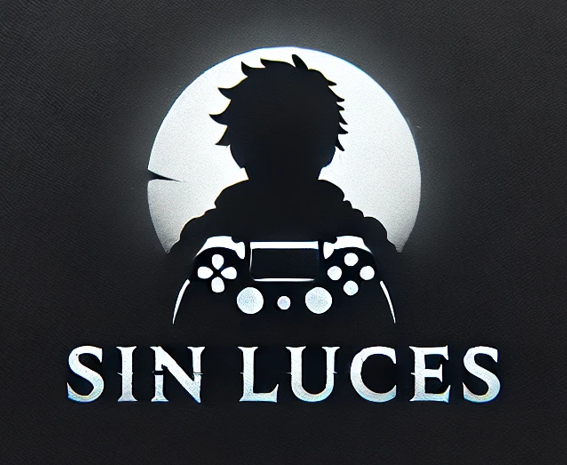

Pengo - Sin Luces és una reinterpretació educativa del clàssic arcade Pengo (Sega, 1982), on et posaràs a la pell d’un valent pingüí que ha de sobreviure en un laberint de gel mentre s’enfronta als temibles Sno-Bees.
Aquest projecte s’ha desenvolupat amb finalitats educatives a la UPC, i vol ser un petit homenatge a l’esperit dels jocs retro 🎮.
Logo de l'equip.
Vídeo presentant el projecte amb context, gameplay i eines de depuració.